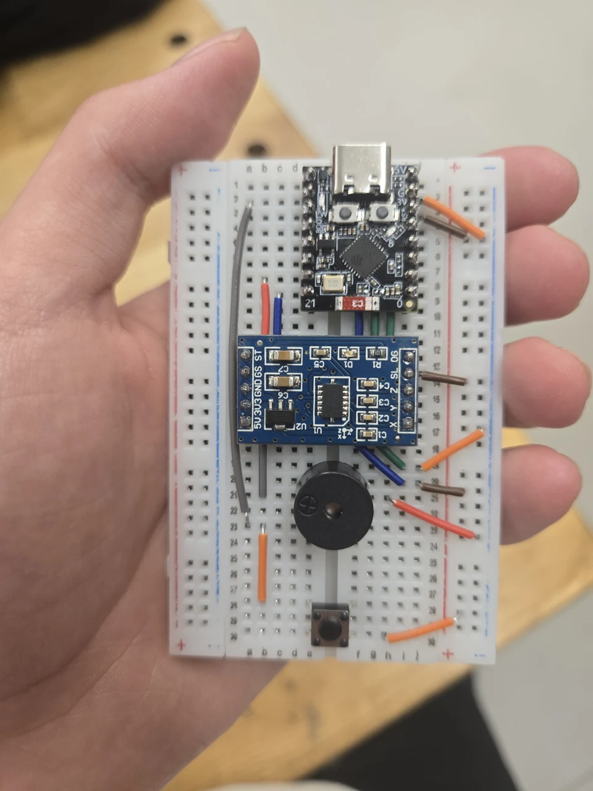
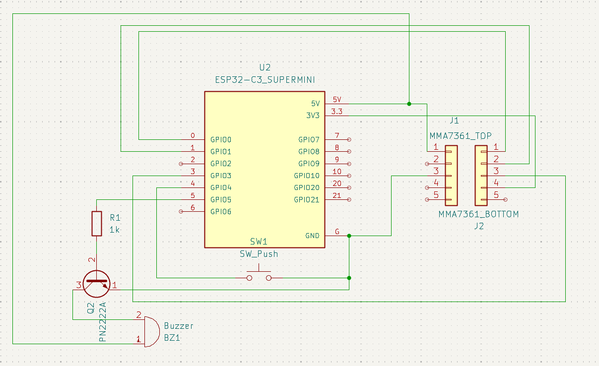
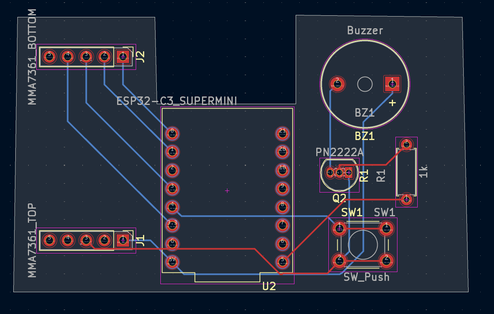
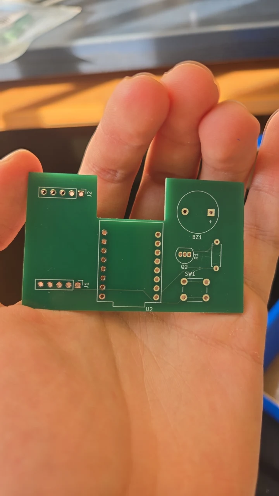
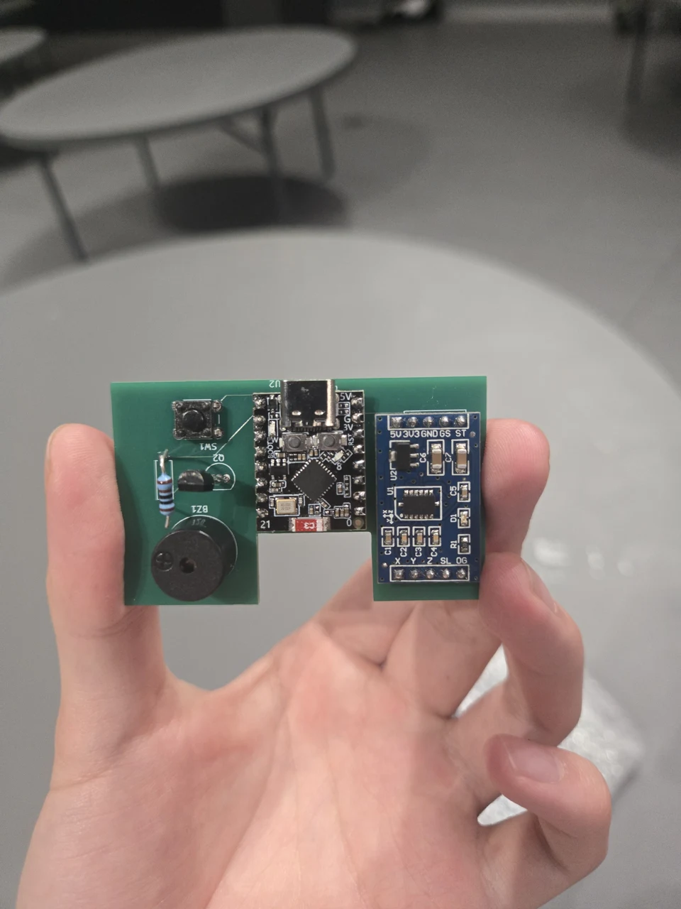

Our team prototyped a waist-worn fall detector for people continuing rehabilitation at home. It gives the wearer an audible warning and can email care staff when help may be needed.
The breadboard prototype
We wired an MMA7361 accelerometer, an ESP32-C3 SuperMini, an active buzzer, and a push button on a breadboard. The accelerometer measures motion along three axes. The ESP32 reads those signals and starts an alert when its firmware detects a possible fall.
A double press starts a manual SOS. In either mode, the buzzer sounds during a short countdown so the wearer has time to double-press the same button to cancel a false alarm.

Designing the PCB
The device itself needed to withstand falls. A drop could loosen the breadboard’s jumper wires, so I designed a custom printed circuit board in KiCad. Copper traces replaced the jumper wires, and the parts could be soldered in place.
I placed the buzzer away from the accelerometer to reduce the risk of interference affecting sensor readings. I also used a transistor and resistor to switch the buzzer without drawing its operating current through an ESP32 output pin.



Assembling and testing the board
With the components soldered onto the board, we tested the sensor, buzzer, and button together. If the countdown expires, the ESP32 uses its built-in Wi-Fi to send an HTTPS request to our backend. The backend logs the alert and emails care staff with the device ID.
We wrote the firmware in C++ with the Arduino framework. The backend ran on Google Cloud and used Go and SQLite to verify each device’s ID and API key. We tested the API and email delivery separately, then exercised the full alert flow on the hardware.

Working demo
In the demo, we trigger and cancel a manual SOS, then let a second SOS send an email. We repeat both tests by dropping the device to trigger the accelerometer. The demo shows a roughly five-second warning for the manual SOS and a 20-second warning for the detected fall.